2. 功能概述与业务背景
做什么： 活动应用覆盖企业员工活动全生命周期。运营在后台配置活动（封面、时间/场次、可见范围、报名收集项、积分、签到码），并可装修 H5/PC 首页版面；审核/发布后，员工在 H5 或 PC 发现活动、按场次报名、扫码签到、评论/评分/发瞬间；运营管理报名、评论、瞬间与奖品。
为什么做： 把线下「通知 + 表格收名单」收口到统一规则：名额、多场次、审核、手动截止、终止、签到核销，员工自助参加，运营可复盘。
产品定位： 康尼「员工与组织」下的活动运营中台 + 员工参加端。当前为可交互原型（内存 mock），用于评审交互而非生产。
核心场景： ① HR 创建开放日/培训/疗休养/周期球类并发布；② 员工浏览报名；③ 现场扫码；④ 进行中或已结束后评分发瞬间（不限次数）、后台发奖导出。
6. 用户流程
6.1 创建发布 后台-活动管理-新建活动 → 保存（audit 待提交或无需审核）→ 可选提交审批 → 审核通过 → 发布。仅对命中可见范围（及司龄）的员工出现。失败：表单校验 message.error。
6.2 员工报名 详情 CTA「立即报名」→ H5 跳转 signup / PC 弹窗 → 勾选未截止场次 → 填姓名等 → 确认报名。toast「报名成功」。满员仅标「已满」，仍可勾选且提交不拦配额。
6.3 取消 报名窗内 + 已报名：单场次 CTA「取消报名」→ 弹窗「取消后将释放名额，报名截止前可以再次报名。」→ 确认取消。多场次 CTA 为「立即报名」(adjust)。发起人字段是文本，不校验身份，取消/调整规则与普通员工相同。
6.4 签到 后台开启扫码签到 → 列表更多或详情 Tab 出示码（H5 URL #/c/h5/{id}/checkin?s=&t=）。员工仅 H5 打开。PC 无 checkin 路由。发起人姓名全等时详情内嵌 OrganizerCheckInQr。
6.5 装修首页 产品说明：C 端首页版面以「首页装修」（H5/PC 装修）为准。「活动装修（仅演示）」仅演示活动卡片与组件样式，不作为生产装修入口。
原型页：后台-活动装修 → 选移动端/PC → 拖入搜索/轮播/活动/瞬间 → 右侧改样式与 latestCount → 画布改动即时 saveActivityDecoration 写 draft → 点保存 publishActivityDecoration toast「已保存，C端首页已更新」。C 端首页实际 useActivityDecoration 读的是 draft，未点保存也会在刷新后看到草稿（localStorage）。
7. 后台页面需求
7.1 后台-概览 页面目标 运营看到待办量与活动健康度，跳转列表处理。
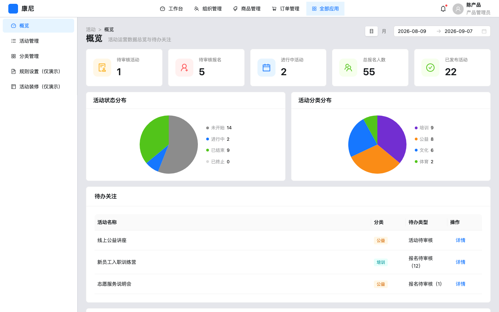
后台-概览-页面整体 ：标题旁 OverviewDateRange；KPI、状态/分类饼图、「待办关注」「进行中的活动」。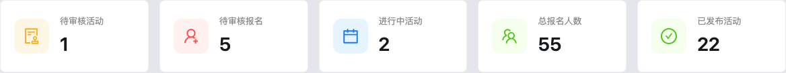
后台-概览-KPI指标卡 ：待审核活动 / 待审核报名 / 进行中活动 / 总报名人数 / 已发布活动。均 onNavigate(activity-list)，无 query。日期范围默认近 30 天，可切日/月。报名人数按 uniqueBySignupOccupant。组件显示逻辑
组件路径 组件类型 默认状态 显示/隐藏 启用/禁用 数据来源 状态变化 空/错/加载 权限 后台-概览-日期范围 RangePicker defaultOverviewDateRange 始终 始终 OverviewDateRange 改范围重算 KPI/表 无 无 后台-概览-待办关注 Table 有数据则展示 始终 详情可点 buildAttentionRows 报名待审核点详情带 tab=signups 暂无待办 无 后台-概览-进行中的活动 Table 进行中 始终 详情可点 buildInProgressActivityRows 分页 b2bStandards.table 当前没有进行中的活动 无
操作说明
操作名称 组件路径 触发元素 前置条件 启用/禁用 用户动作 系统响应 状态变化 成功反馈 失败反馈 跳转/接口 查看待办活动 后台-概览-KPI指标卡 KPI 卡片 无 始终 点击 进入活动列表 无 无 无 hash activity-list，无 API
验收 Given 存在待审核活动 When 打开概览 Then KPI 数字与列表一致。Given 点击 KPI When 进入列表 Then 不自动带审核筛选项（现状）。
7.2 后台-活动管理
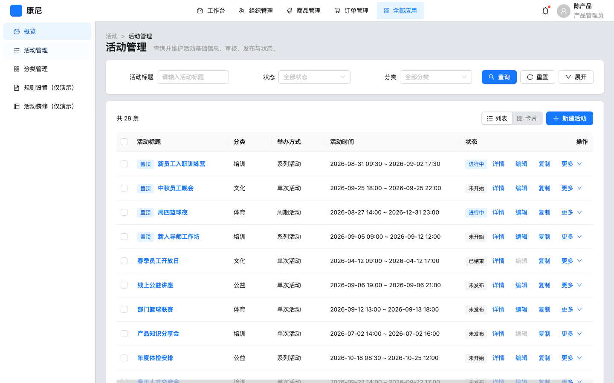
后台-活动管理-页面整体 ：查询区 + 列表/卡片切换 + 新建活动。顶栏当前用户陈产品。后台-活动管理-查询筛选 ：活动标题、审核状态、状态；查询/重置/展开。查询成功文案「查询完成」。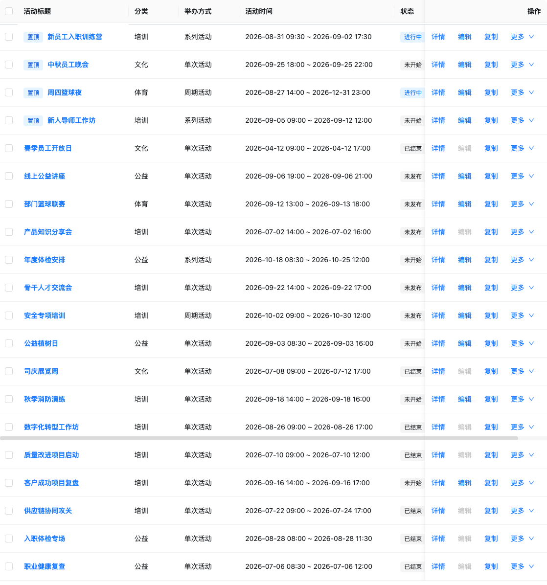
后台-活动管理-列表表格 ：列：标题（可置顶 Tag）、分类、举办方式、活动时间、审核状态、状态、操作。工具栏「展示形式」列表/卡片。后台-活动管理-卡片视图 ：MediaEntityCardGrid：封面、标题、时间摘要、生命周期状态、置顶/审核 Tag。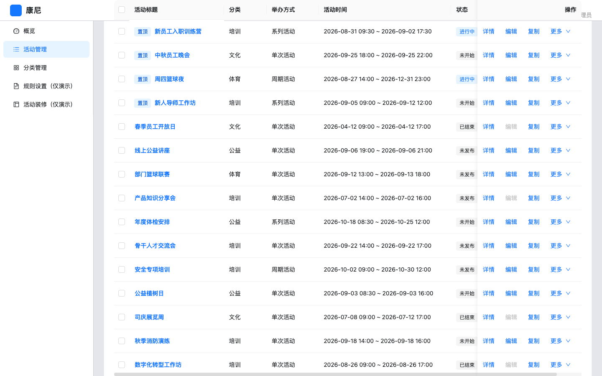
后台-活动管理-行操作 ：详情、编辑、复制、更多操作。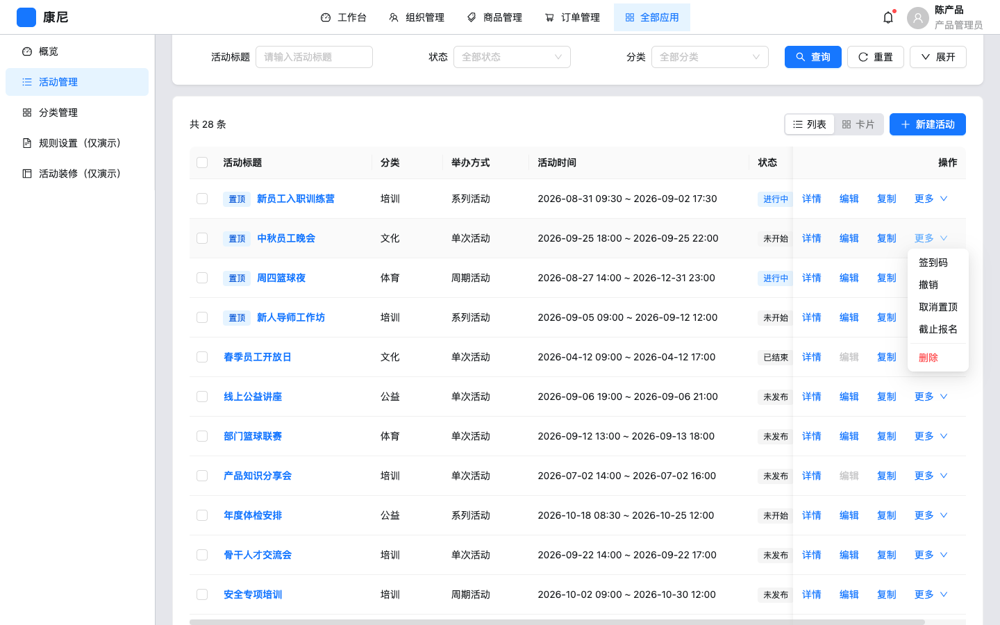
后台-活动管理-更多菜单 ：更多含撤销、取消置顶、截止报名、终止活动（红）、删除。截图为菜单展开态，非确认框。确认框文案见下表。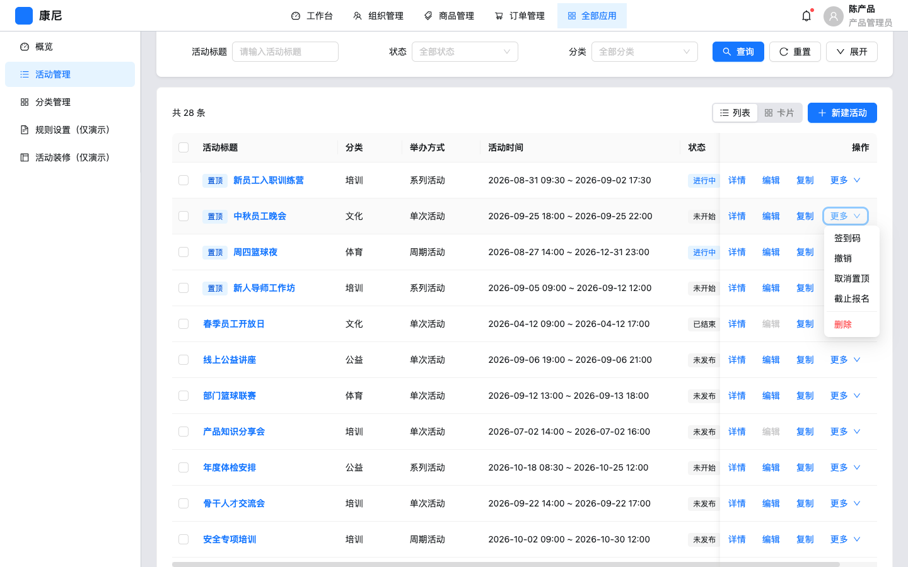
后台-活动管理-更多菜单-签到码项 ：开启签到的活动更多中出现「签到码」。点击后应开 Modal 嵌 ActivityQrCheckInPage。字段说明（筛选）
字段名称 组件路径 控件类型 是否必填 默认值 校验规则 选项值 业务含义 活动标题 后台-活动管理-查询筛选-活动标题 Input 否 空 无 maxlength 在筛选项 — 模糊匹配标题 审核状态 后台-活动管理-查询筛选-审核状态 Select 否 全部 — 待提交/待审核/已通过/已驳回/无需审核 auditStatus 状态 后台-活动管理-查询筛选-状态 Select 否 全部 — 未发布/未开始/进行中/已结束/已终止 lifecycle 展示态 分类 展开后 Select 否 全部 — 启用分类 category 举办方式 展开后 Select 否 全部 — 单次/周期/系列 scheduleType 活动时间/创建时间/发布时间 展开后 RangePicker 否 空 — — 落在区间内
操作说明
操作名称 组件路径 触发元素 前置条件 启用/禁用 用户动作 系统响应 状态变化 成功反馈 失败反馈 跳转/接口 新建活动 后台-活动管理-新建活动 主按钮 无 始终 点击 打开表单 无 无 无 activity-create 详情 后台-活动管理-行操作-详情 链接 无 始终 点击 进详情 无 无 无 activity-detail/{id} 编辑 同上-编辑 按钮 canEditActivity 已结束/终止 disabled，tooltip「活动已结束/已终止，不能编辑」 点击 进编辑 无 无 无 activity-edit/{id} 复制 同上-复制 按钮 无 始终（含已结束） 点击 带源数据新建 无 无 无 activity-create/{id} 提交审批 更多或行内 按钮 canSubmitApproval 否则不出现 确认 audit=待审核 是 已提交「」审批 当前不可提交审批 内存 store 审核 行内 按钮 canReviewActivity 仅待审核出现 打开审核弹窗 通过/驳回 audit 变 弹窗内 无 ActivityReviewModal 发布 行内 按钮 未发布 canPublishActivity 否则 disabled，tooltip 仅审批通过或无需审核… 点击 publish=已发布 是 已发布「」 无法发布 patchActivities 撤销 更多 按钮 已发布 未开始才启用；进行中 disabled+tooltip 引导终止 确认「撤销后活动不再对员工可见。发布时间保留。」 publish=未发布 是 已撤销「」 revokeActivityBlockReason 内存 截止报名 更多 按钮 canCloseActivitySignup 已发布且未手操截止且报名未到点 确认 signupEndAt=now，写 signupClosedAt 是 已截止「」报名 无 applyCloseActivitySignup 恢复报名 更多 按钮 canReopenActivitySignup 有 signupClosedAt 且未终止 确认 还原截止 是 已恢复「」报名 无 单次还原 stash；周期/系列 syncSignupEndAt 终止 更多 按钮 canTerminateActivity 已发布且进行中 确认「未举办场次不再进行，且不可恢复为进行中。」 activityStatus=已终止 是 已终止「」 无 applyTerminateActivity 删除 更多 按钮 无 始终 确认「删除后不可恢复。」 从列表移除 是 已删除「」 无 filter id 置顶 更多 按钮 无 始终 点击 pinned 翻转 是 已置顶/已取消置顶「」 无 内存 签到码 更多 按钮 checkInEnabled 未开启则无此项 点击 Modal 二维码 无 无 无 无独立路由 展示形式 后台-活动管理-展示形式 Segmented 无 始终 点列表/卡片 切换 Table / MediaEntityCardGrid 写入 localStorage activity-list-view 无 无 无 API 批量撤销/提交/发布/设分类 勾选后批量栏 按钮 有选中且为列表视图 按 can* 过滤；卡片视图不显示批量栏 点击 批量 patch 是 已撤销 N 个… 已选活动均不可… 内存
交互规则 行内状态按钮互斥：能提交则显示提交；否则能审则审核；否则已发布显示撤销；否则显示发布。查询不改 URL。空表：有筛选「没有符合条件的活动」，否则标准 emptyText。
权限/状态
按钮 待提交 待审核 已通过未发 无需审核未发 已发未开始 进行中 已结束/终止 提交审批 审批开则有 — — — 按 audit 同左 同左 审核 — 有 — — — — — 发布 禁 禁 有 有 — — — 撤销 — — — — 启用 禁用 无 截止报名 — — — — 报名未截止则有 同 无 终止 — — — — 无 有 无 编辑 未结束有 同 同 同 有 有 禁用 删除复制 有 有 有 有 有 有 有
7.3 后台-新增/编辑活动
后台-新增活动-表单页 ：封面、标题、分类、地点、发起人、活动时间、举办方式。底部取消/保存/提交审核。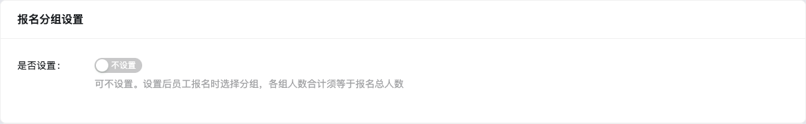
后台-新增活动-报名分组设置 ：独立 Card。是否设置默认关；开后 SignupGroupsEditor，至少 2 组，名称 max20，合计须等于报名总人数。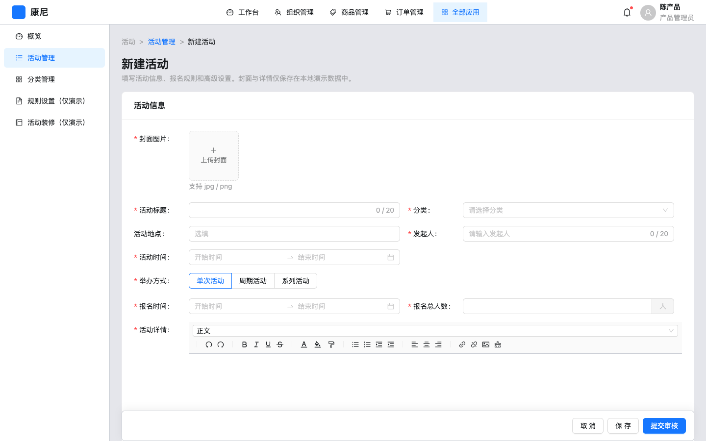
后台-新增活动-高级设置 ：展开后含报名审核、司龄、活动积分、扫码签到、报名字段。发送消息通知不在此折叠。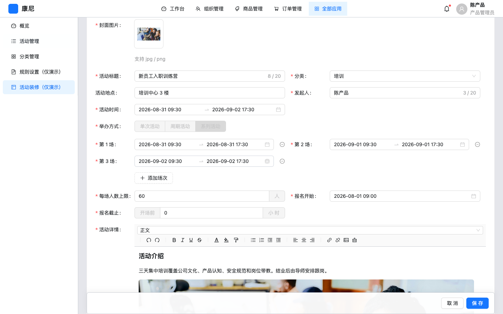
后台-编辑活动-系列场次 ：系列活动编辑：场次 RangePicker；举办方式编辑态 disabled。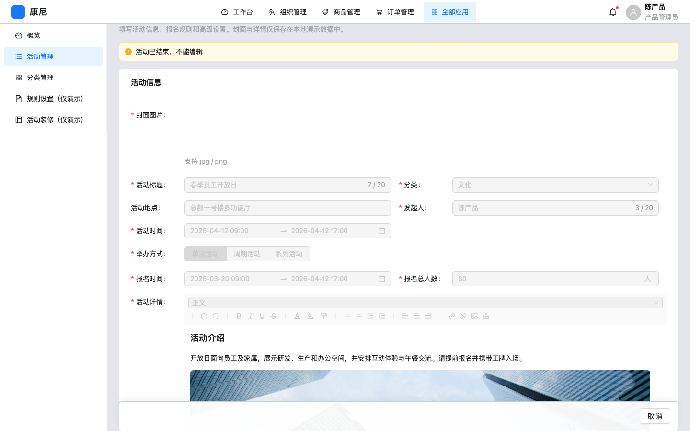
后台-编辑活动-已结束锁定 ：Alert「活动已结束，不能编辑」；Form disabled；底部只留取消，无保存/提交。字段说明
字段名称 组件路径 控件类型 是否必填 默认值 校验规则 选项值 业务含义 封面图片 后台-新增活动-封面图片 Upload→url 是 空 jpg/png；请上传封面图片 — C 端封面 活动标题 后台-新增活动-活动标题 Input 是 空 maxLength=20 showCount — 列表/C 端标题 分类 后台-新增活动-分类 Select 是 空 请选择分类；仅启用项（编辑可保留当前禁用） 分类管理数据 C 端 Tab 与筛 活动地点 后台-新增活动-活动地点 Input 否 总部一号楼多功能厅(mock 默认) 无 — C 端地点 发起人 后台-新增活动-发起人 Input 是 陈产品(默认) maxLength=20；请输入发起人 — 保存时 ensureOrganizerSignup 活动时间 后台-新增活动-活动时间 RangePicker 是 空 请选择活动时间；结束不得早于开始 — 生命周期计算窗 举办方式 后台-新增活动-举办方式 Radio 是 once 请选择举办方式；编辑 disabled 单次/周期/系列 场次生成策略 报名时间 单次-报名起止 RangePicker 单次是 — — — signupStartAt/EndAt 名额 后台-新增活动-名额 InputNumber 是 50 ≥1；周期/系列=每场上限 — C 端已报名 a/b 周几+时段 周期 Checkbox+Time 周期是 — 请选择重复的周几；请填写{周}时段；无场次则报错 周一…日 generateRecurringSessions 场次列表 系列 RangePicker 列表 系列是 — 至少 2 场；每场落在活动时间内 — sessions 报名开始 周期/系列 DatePicker 是 — 请选择报名开始时间 — signupStartAt 报名截止 周期/系列-开场前小时 InputNumber 是 0 ≥0；placeholder「0 为开场即停」 — signupHoursBefore；UI Label「报名截止」 活动详情 后台-新增活动-活动详情 RichText 是 — 请填写活动详情 — C 端介绍 HTML；工具栏「区块背景」；disabled 藏工具栏 可见范围 后台-新增活动-可见范围 Radio 是 全员 请选择可见范围 全员/按部门/自定义人群/导入人群 C 端过滤，见 5.1 选择部门 可见=按部门 TreeSelect 条件必填 空 请选择部门 orgDepartmentTree C 端按部门及下级命中 选择人员 可见=自定义 TreeSelect 条件必填 空 请选择人员 人员树，部门节点不可选 C 端按姓名命中 导入人群 可见=导入 Upload 条件必填 空 请导入人群文件；csv/xlsx 模板列：工号、姓名、部门 C 端按姓名或手机命中 发送消息通知 后台-新增活动-可见范围卡 Switch 否 关 — — notifyOnPublish，无真实推送 是否设置分组 后台-新增活动-报名分组设置 Switch 否 不设置 开则各组人数合计=报名总人数，否则拦保存 已设置/不设置 setGroupSignupEnabled 分组 后台-新增活动-报名分组设置-分组 SignupGroupsEditor 开则≥2 组 空名+限 0 名称 maxLength=20；至少 2 组不可删到 1 添加分组 C 端多选组+上限 N 人 是否审核报名 高级 Switch 否 关 — — signupSettings.needAudit 审批流节点 审核开时 Editor 否 空 — — 报名审批，非活动审批 报名司龄限制 高级 Switch+Number 开则年限必填 关 年限≥0 — 开启后 C 端不可见且不可报，见 5.1 活动积分 高级 Switch+Number 开则必填 开/规则页 signupPointsMin 须在 signupPointsMin～signupPointsMax（默认 1～20） — extra：规则范围 min～max；表单无每日上限 扫码签到 高级 Switch 否 关 — — checkInEnabled 开始前可扫 签到开 Number 是 30 分钟 — checkInOpenMinutesBefore 动态二维码 高级 Switch 否 关 — — 5 分钟刷新 报名字段 高级-SignupFieldsEditor 编辑器 至少 1 项 固定「姓名」必填 见 signupFields 校验 预设+自定义 C 端表单
操作说明
操作名称 组件路径 触发元素 前置条件 启用/禁用 用户动作 系统响应 状态变化 成功反馈 失败反馈 跳转/接口 取消 后台-新增活动-取消 次按钮 无 始终 点击 dirty 则确认「未保存的修改将丢失。」 丢草稿 无 无 回列表 保存 后台-新增活动-保存 主按钮 校验通过且未锁定 editLockedReason 时整组不渲染 点击 upsertActivity 写入 活动已保存/已更新 message.error 积分或场次；锁定时 warning 锁定文案 回列表 提交审核/审批 后台-新增活动-提交审核 按钮 create 或 canSubmitApproval(editing) showSubmit 为假则无 点击 save(true) audit=待审核 是 已提交审核/已提交审批 同保存校验 回列表
校验规则 分组人数合计必须等于报名总人数，不符则静默不提交（表单内联）。自定义文本字数 1～200。同行人最多 1～20 且至少勾选一项收集。单选/多选≥2 选项。周期无生成场次：「该活动时间内没有可生成的场次」。
异常 缺封面/标题/分类/详情拦提交。已结束/终止：列表编辑禁用；若直达 edit hash，表单 Alert + disabled + 点保存走 warning。进行中仍可改时间/名额/可见范围（举办方式仍锁）。
7.4 后台-活动详情
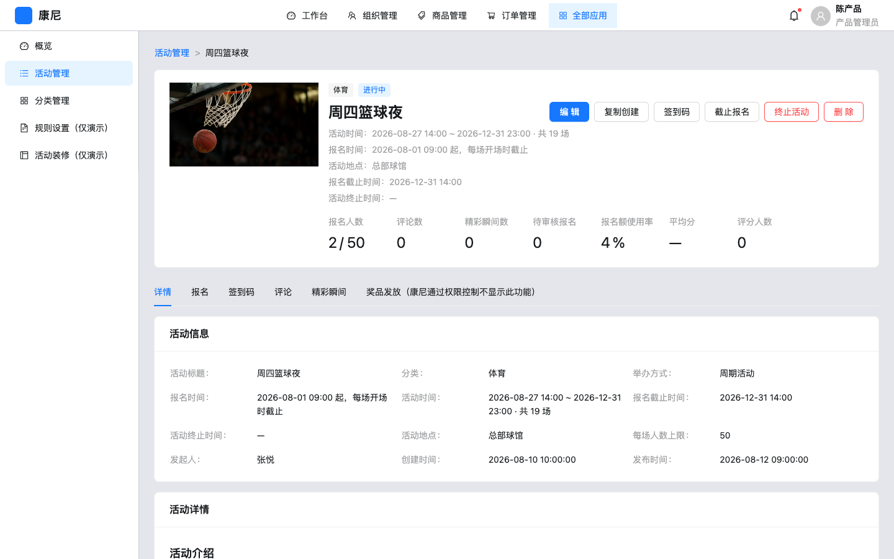
后台-活动详情-页面整体 ：面包屑 + ActivityDetailHeader + Tabs。Tab：详情/报名/签到码/评论/精彩瞬间/奖品。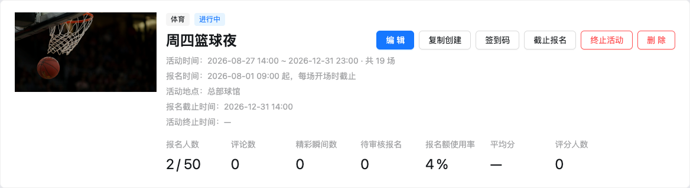
后台-活动详情-页头 ：封面、分类/生命周期/审核 Tag、标题右侧操作、事实行（活动/报名时间、地点、报名截止、终止时间）、嵌入 ActivityStatsRow。后台-活动详情-页头-操作 ：审核/提交/编辑互斥；复制创建；签到码切 Tab；截止/恢复/终止/删除。已结束编辑 disabled+Tooltip。后台-活动详情-页头-指标 ：顺序：报名人数（/总名额）、评论数、精彩瞬间数、待审核报名、报名额使用率、平均分、评分人数。报名人数/待审核按 uniqueBySignupOccupant。后台-活动详情-详情Tab-场次 ：needsSessionPick 才渲染 ActivitySessionsDetailCard：场次/开始/结束/报名截止/人数上限。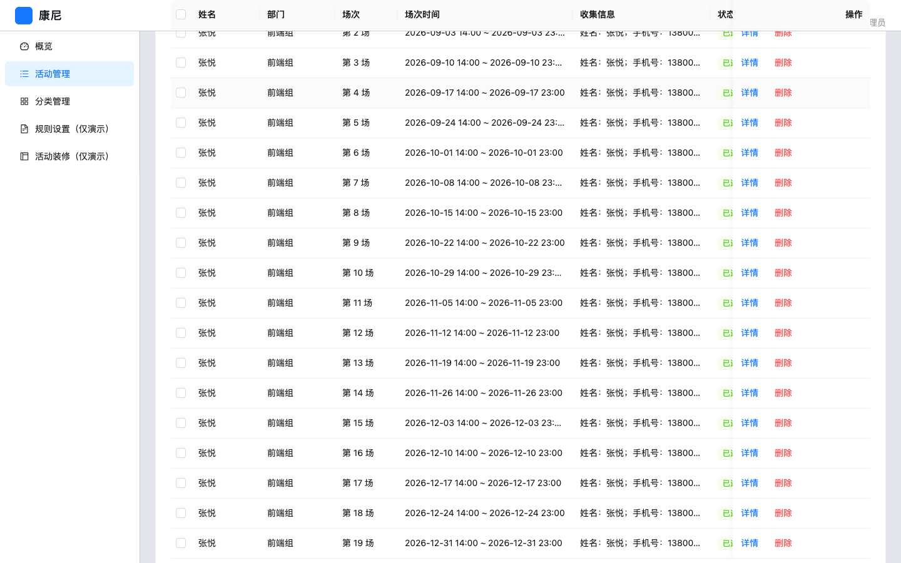
后台-活动详情-报名Tab ：周期/系列：SignupSessionSearchSelect（showSearch，全部场次+第 n 场+起止）。无场次概况表。人表场次列仅「第 n 场」，场次时间另列。后台-活动详情-报名Tab-场次筛 ：收起态可见场次（字段序：姓名、部门、场次、状态；报名时间在展开后）。点查询才过滤。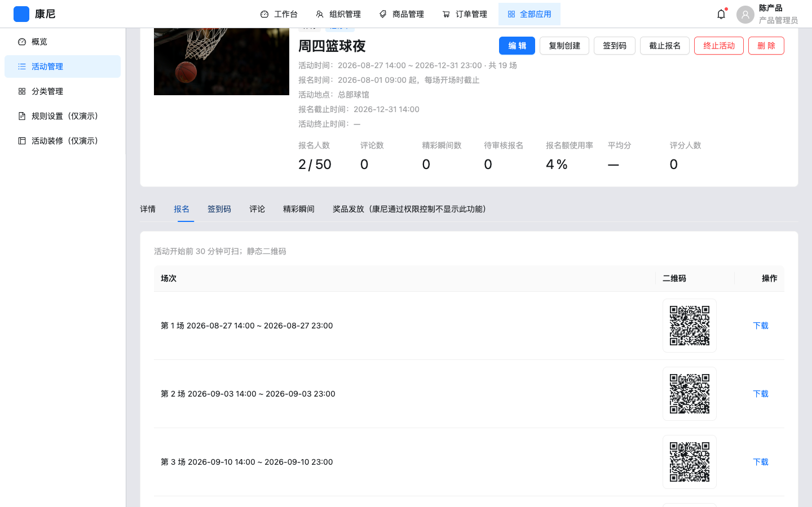
后台-活动详情-签到码Tab ：场次二维码表；静态可下载；动态码提示每 5 分钟刷新不支持下载。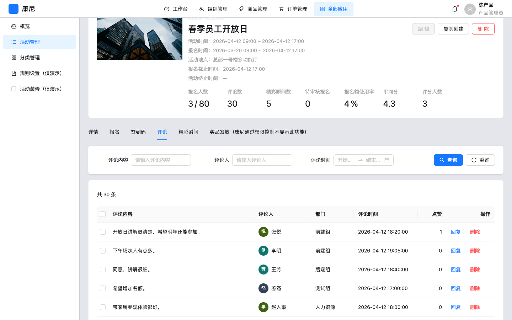
后台-活动详情-评论Tab ：筛内容/评论人/时间；列：内容、评论人（头像）、部门、时间、点赞数。行操作回复/删除。删除级联子回复。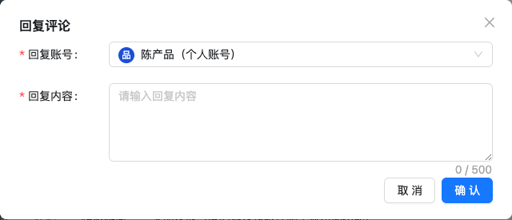
后台-活动详情-评论Tab-回复弹窗 ：Modal「回复评论」。回复账号默认陈产品（个人账号）；另有活动小助手、官方客服。回复内容必填 maxLength=500。成功 toast 回复成功。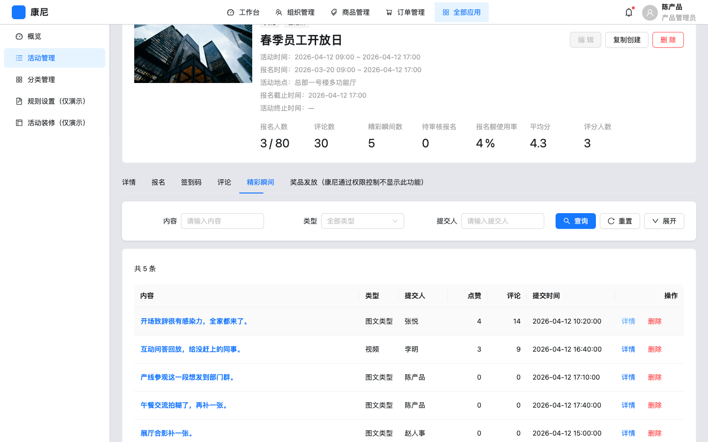
后台-活动详情-精彩瞬间Tab ：筛内容/类型/提交人/时间。行：详情、删除。详情抽屉 footer「回复」评论该瞬间；评论/回复旁也可回复或删除。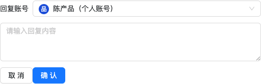
后台-活动详情-瞬间详情-行内回复 ：MomentInlineReplyForm：回复账号 + 回复内容 + 取消/确认。成功回复成功。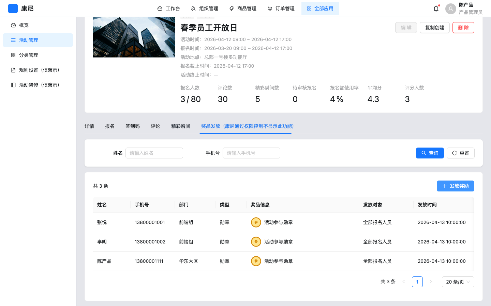
后台-活动详情-奖品发放Tab ：Tab 标题含权限文案但仍展示。发放：canGrantPrize 已发布且已结束，否则 grantPrizeBlockReason。目标类型 visiblePrizeTargetTypes：无分组字段则无「指定分组」。组件显示逻辑
组件路径 组件类型 默认状态 显示/隐藏 启用/禁用 数据来源 状态变化 空/错/加载 权限 后台-活动详情-编辑按钮 Button 未结束启用 始终显示 已结束/终止 disabled+Tooltip activityStatus — — canEditActivity 后台-活动详情-签到码按钮 Button checkInEnabled 未开启隐藏 可点切 Tab 活动字段 — 未开启扫码签到 无 后台-活动详情-场次卡 Card+Table 周期/系列 needsSessionPick 才显示 只读 sessions + signupHoursBefore 终止后未开场不再举行 无场次则整卡不渲染 无 后台-活动详情-报名-场次筛 Select showSearch 全部场次 周期/系列 点查询才生效 sessionSelectOptions filterBySessionId 按 answers.场次 — 无 后台-活动详情-奖品Tab Tab 始终在 tab 列表 始终 发放受 canGrantPrize prizes 结束后可发 演示导入限制 文案声称隐藏但未藏 后台-活动详情-评论Tab-回复弹窗 Modal 点回复打开 有评论行 始终可开 author+content adminReplyActivityComment comments 新增子回复 空内容拦提交 无 RBAC 后台-活动详情-瞬间详情-行内回复 MomentInlineReplyForm 点回复展开 详情抽屉已开 始终 author+content max500 adminCommentOnMoment / adminReplyMomentComment 瞬间评论树 空内容拦提交 无
操作说明
操作名称 组件路径 触发元素 前置条件 启用/禁用逻辑 用户动作 系统响应 状态变化 成功反馈 失败反馈 跳转/接口 回复评论 后台-活动详情-评论Tab-回复 行按钮回复 有评论 始终 选回复账号、填内容、确定 adminReplyActivityComment；value=陈产品 展示「陈产品（个人账号）」 新增 parentId 子记录 回复成功 请选择回复账号 / 请输入回复内容 无 HTTP 删除评论 后台-活动详情-评论Tab-删除 行/批量删除 有记录 始终 确认 removeCommentsAndDescendants 删根及全部子孙 已删除… — 无 回复瞬间 后台-活动详情-瞬间详情-回复 抽屉 footer 回复或评论旁回复 详情已开 始终 选账号填内容确认 adminCommentOnMoment / adminReplyMomentComment 瞬间评论树 回复成功 请选择回复账号 / 请输入回复内容 无 HTTP
报名操作成功：「已通过/已驳回/已删除「」的报名」「已导出 N 条报名」。驳回弹窗 extra「选填」，非必填。一人报多场仍一行 ，场次列拼接「第 n 场」；筛指定场次只要 answers 含该 id 即保留该行（不拆行）。
id 无效：Empty「未找到该活动」。详情 HTML 空：「暂无详情」。无收集字段：「暂无收集字段」。
7.5 后台-分类管理 / 规则设置（仅演示）
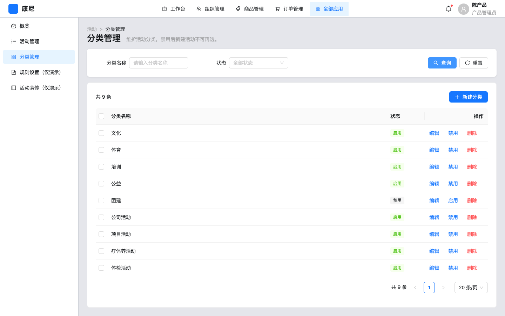
后台-分类管理-页面整体 ：分类名称 maxLength=10；启用/禁用；占用中不可删。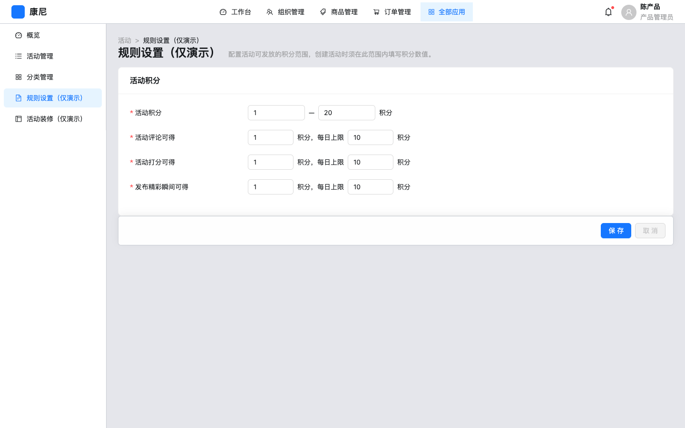
后台-规则设置（仅演示）-页面整体 ：标题与面包屑「规则设置（仅演示）」。活动积分：下限 — 上限（默认 1–20），失败「上限不能小于下限」。后三行评论/打分/精彩瞬间：积分 + 每日上限。保存 toast「规则设置已保存」。操作名称 组件路径 成功反馈 失败反馈 保存分类 后台-分类管理-保存 分类已创建/已更新 — 删除分类 后台-分类管理-删除 已删除「」 分类「」已被活动使用，无法删除 批量启用/禁用 后台-分类管理-批量 已启用/禁用 N 个分类 已选分类均已启用/禁用 保存规则 后台-规则设置（仅演示）-保存 规则设置已保存 validateActivityPointRules 的 message.error
7.6 后台-活动装修（仅演示）
产品说明：装修以首页装修为准 ，此处仅演示样式。生产不单独维护活动装修；C 端发现页走统一 H5/PC 装修（微页面）。本页工作台仅方便对照卡片字段、列表样式等演示效果。
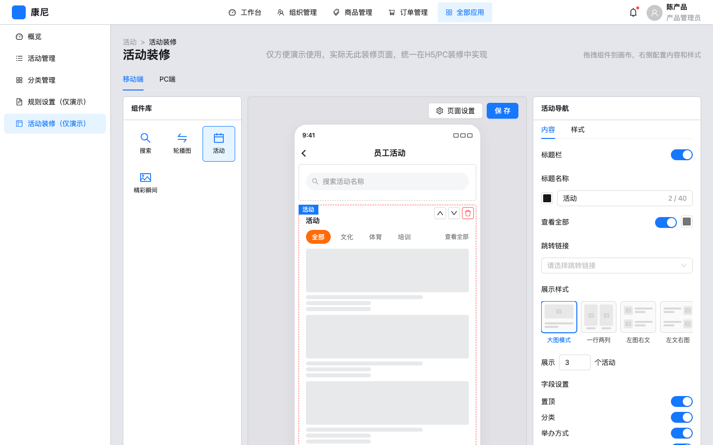
后台-活动装修-页面整体 ：侧栏「活动装修（仅演示）」。面包屑/标题「活动装修」。titleExtra：仅方便演示使用，实际无此装修页面，统一在H5/PC装修中实现。顶栏切移动端/PC。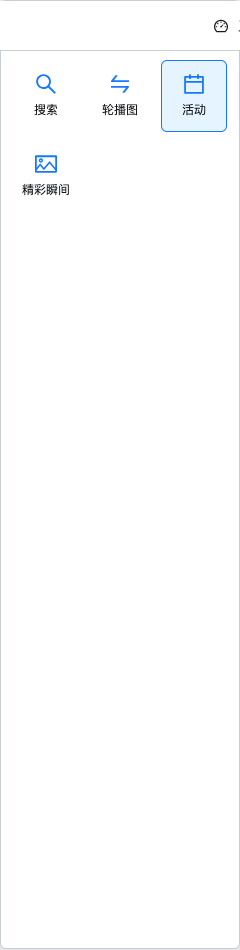
后台-活动装修-组件库 ：可拖可点：搜索、轮播图、活动、精彩瞬间。无悬浮按钮。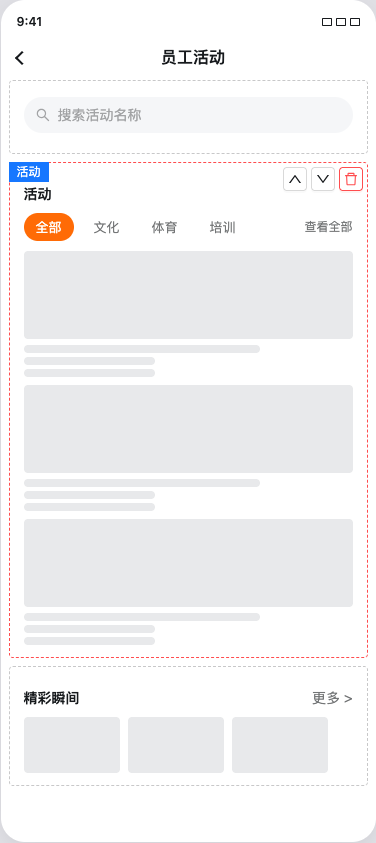
后台-活动装修-画布 ：默认块顺序：轮播 → 搜索 → 活动 → 精彩瞬间。页面标题默认「员工活动」。预览分类 Tab 仅全部/文化/体育/培训（无公益）。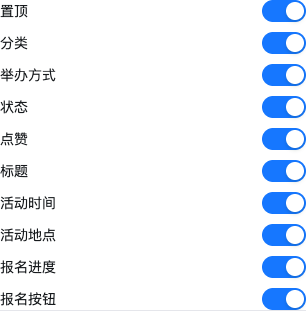
后台-活动装修-右侧配置-字段设置 ：选中活动块后：置顶、分类、举办方式、状态、点赞、标题、活动时间、活动地点、报名进度、报名按钮。默认开。字段说明
字段名称 组件路径 控件类型 是否必填 默认值 校验规则 选项值 业务含义 页面标题 后台-活动装修-页面设置-页面标题 Input 空则回落员工活动 员工活动 maxLength=20 — C 端 Shell 标题 区块标题 右侧配置-标题 Input 否 组件类型名 slice 0～40 — 活动/瞬间栏目标题 列表样式 右侧-样式 选择 活动/瞬间 活动 large-image；瞬间 H5 scroll / PC large-image 按类型限制 大图/一行两列/左图右文/左文右图/横向滑动 C 端卡片布局 展示条数 latestCount 右侧 Number 是 H5 活动3/瞬间3；PC 活动6/瞬间5 1～20 — 首页切片 搜索占位 搜索块 text 否 搜索活动名称 — — 点进独立搜索页 轮播 轮播块 slides+样式 无图则 C 端不渲染 3 张演示图 高 80～420；间隔 1～10 秒 bleed/inset/split；dot/number HomeBanner 查看全部 showMore Switch+颜色+链接 否 开 链接可指 list 或 past-moments — H5/PC 跳转全部或往期 字段设置（活动） 右侧-字段设置 Switch×10 否 全开 关则 C 端对应元素不渲染 置顶/分类/举办方式/状态/点赞/标题/活动时间/活动地点/报名进度/报名按钮 decoActivityCardFields 字段设置（瞬间） 右侧-字段设置 Switch×2 否 全开 关则往期卡片少标题或状态 标题、状态 DECO_MOMENT_CARD_FIELD_TOGGLES
操作说明
操作名称 组件路径 触发元素 前置 启用/禁用 用户动作 系统响应 状态变化 成功 失败 跳转/接口 添加组件 后台-活动装修-组件库 chip 点击或拖入画布 无 始终 点击/drop addDecoBlock + save draft localStorage 无单独 toast 无 无 HTTP 页面设置 后台-活动装修-页面设置 按钮 无 始终 改标题确定 commit pageTitle draft 无 无 Modal 保存 后台-活动装修-保存 主按钮 无 始终 点击 publishActivityDecoration 复制 draft→published published 更新 已保存，C端首页已更新 无 C 端实际读 draft 非 published 端切换 DecorationSurfaceTabs Tab 无 始终 点移动端/PC 换 surface 画布 独立两套 page 无 无 activity-layout-mobile/pc 字段开关 后台-活动装修-字段设置 Switch 选中活动/瞬间块 始终 关某项 commit + draft persist C 端对应元素不渲染 无 toast 无 无 HTTP
C 端 useActivityDecoration 绑定 draft。拖拽即 persist。published 仅「保存」写入，员工端未使用 usePublishedActivityDecoration。
8. H5 页面需求
8.1 H5-首页 / 搜索 / 全部
H5-首页-页面整体 ：装修 draft 块顺序：轮播 → HomeSearchRow（搜索按钮+我的图标）→ 活动列表（块 latestCount，默认 3）→ 往期精彩回顾。悬浮回主页。顶栏无「我的活动」文字。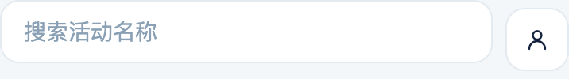
H5-首页-搜索行 ：HomeSearchRow：左搜索按钮，右 40×40 用户图标按钮，aria-label=我的活动。H5-首页-我的活动 ：图标按钮 goH5MySignups → #/c/h5/my。依赖装修存在 search 块；删除搜索块后首页无此入口。搜索页/全部活动不渲染。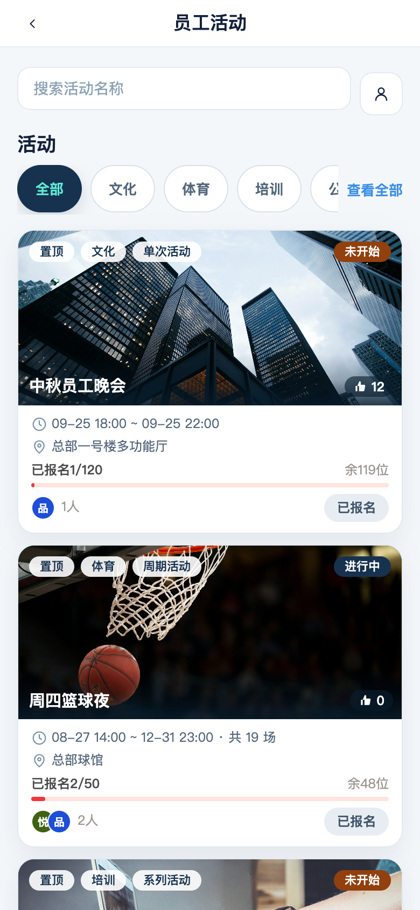
H5-首页-轮播图 ：HomeBanner：无有效图片则整块不渲染；可点进活动/投票/全部/往期。H5-首页-搜索入口 ：来自装修 search 块；点击进 #/c/h5/search，不在首页内过滤。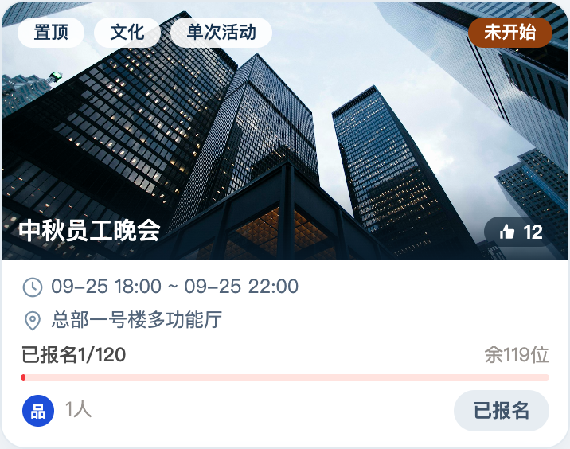
H5-首页-活动卡片 ：大图：封面 badge+赞+叠标题；HomeQuotaBlock 已报名 a/b、余N位、进度、头像≤4、N人、CTA。左图右文/左文右图：封面无 badge；ActivitySideCopy 标题+置顶/状态/分类/举办方式；compact 名额无头像。H5-搜索-空查询 ：独立搜索页：壳标题「搜索」；ActivitySearchBar 顶栏；空 query「输入名称搜索活动」。无我的图标。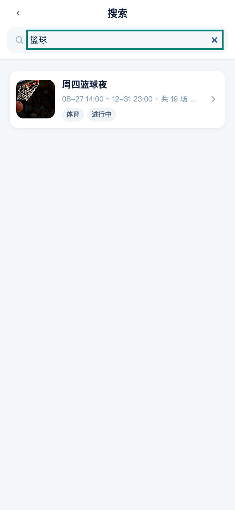
H5-搜索-有结果 ：输入「篮球」匹配标题。无匹配「没有匹配的活动」。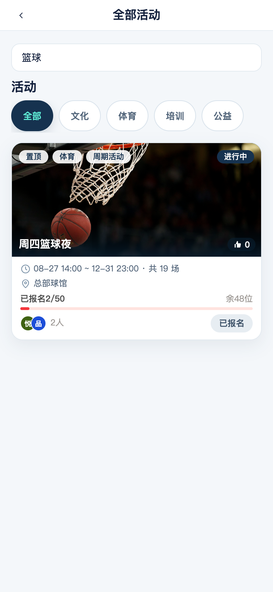
H5-全部活动-页面整体 ：可搜+分类（含公益）；有关键字无结果「未找到相关活动」。活动块分类 Tab 用 CLIENT_TABS（含公益）。装修画布预览 Tab 写死四项无公益，两端不一致。瞬间块无数据时整段不渲染（非空文案）。列表/搜索/全部数据源须为 5.1 可见集合。卡片字段由装修开关控制，默认全显。
8.2 H5-活动详情
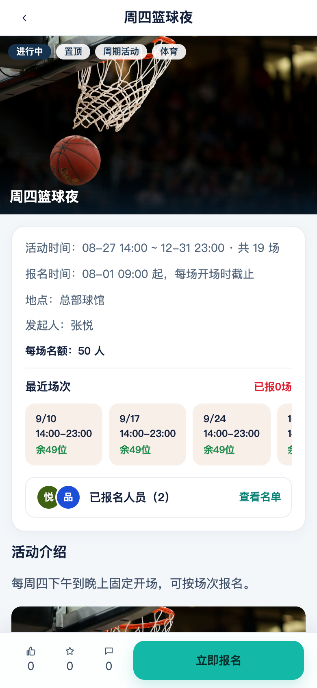
H5-活动详情-页面整体 ：周四篮球夜：进行中/置顶/周期/体育；活动时间窗与共 N 场；每场开场截止；发起人；OrganizerCheckInQr 仅姓名全等；最近场次余位；已报名人员；介绍。进行中亦可出活动评分区。H5-活动详情-已报名人员 ：入口：头像堆（预览 5）+已报名人员（N）+查看名单。空：「已报名人员 · 暂无已通过报名」。点开 H5 sheet：两列姓名+部门；周期/系列场次日期 Tab；N>5 出搜索姓名或部门。H5-活动详情-底栏操作 ：点赞、收藏、评论（滚到社交区）、分享、主 CTA。H5-活动详情-报名CTA ：可报时「立即报名」启用，跳转 /signup。H5-已结束活动-详情 ：已结束活动展示评分区；CTA「报名已结束」禁用。进行中活动同样可出评分区。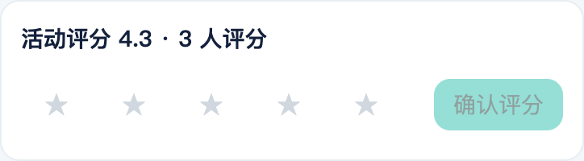
H5-活动详情-活动评分 ：canShowActivityRating：进行中或已结束。已通过报名可评 1～5 星 + 确认评分；每人一次，toast「已评分」。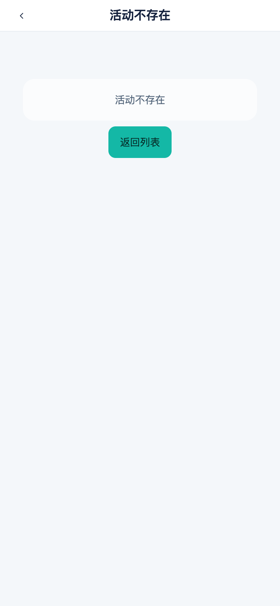
H5-活动详情-活动不存在 ：非法 id：标题与正文「活动不存在」，主按钮返回列表，另有返回上一页/回主页。CTA 状态
条件 按钮文案 启用 点击 已结束或已终止 报名已结束 否 无 now < signupStartAt 报名未开始 否 无 已报名+可取消+多场次 立即报名 是 adjust 进报名页 已报名+可取消 取消报名 是 打开取消弹窗 已报名其他 已报名 否 无 报名窗关 报名已截止 否 无 可报 立即报名 是 signup 页
无 CTA 文案「已满员」。场次「已满」不禁用勾选、不拦提交。分享：选择联系人 → 确定（N）→ toast「已分享给 N 人」。评论成功「评论成功」。发布瞬间：报名已通过且活动进行中或已结束即可，不限次数；未开始/已终止不可发。按钮「发布瞬间」，成功「发布成功」。
8.3 H5-报名页
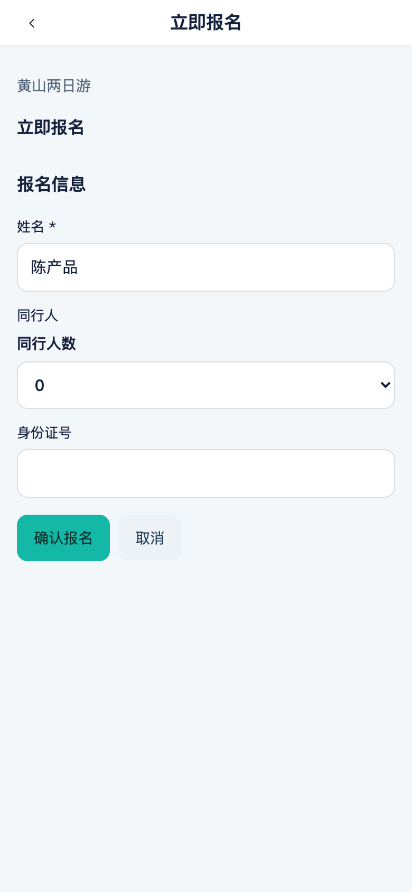
H5-报名页-表单 ：legend 创建=确认报名、调整=立即报名。场次：截止（已截止）disabled；余N位/已满仅文案。默认 5 场，「展开全部场次」。空「暂无可以报名的场次」。字段名称 组件路径 控件类型 是否必填 默认值 校验规则 选项值 业务含义 参加场次 H5-报名页-参加场次 checkbox 组 周期/系列是 无 请选择要参加的场次；请选择仍可报名的场次 未截止场次；已满仍可勾 CLIENT_SIGNUP_SESSION_LIMIT=5 姓名 H5-报名页-姓名 text 是（固定） 陈产品 不能为空；最多 20 字 — 报名身份 手机号 H5-报名页-手机号 text digit 按活动配置 13800001111 仅允许输入数字；最多 11 字 — 联系方式 报名类型 类型>1 时 radio 是 第一项 types=0 显示暂不可报名 signupSettings.type canSubmit 需已选 分组选择 H5-报名页-分组 checkbox 组 按配置 — 展示上限文案，满员不禁用 组名（上限 N 人） inputType=group；提交不拦组余量 同行人 companion 人数+子表 子项必填 0 最多 1～20 姓名/手机/身份证 占额外名额 待确认
操作
操作名称 组件路径 触发元素 前置 启用/禁用 用户动作 系统响应 状态变化 成功 失败 跳转 确认报名 H5-报名页-确认报名 主按钮 types>0 且已选类型且（无需场次或有可报场次） canSubmit 否则禁用 点击 saveClientSignup 报名记录 报名成功 / 已更新报名 / 已取消报名(清光场次) 校验文案；窗关则 CTA 文案作 toast 回详情 取消 H5-报名页-取消 次按钮 无 始终 点击 关闭页 无 无 无 回详情
8.4 H5-我的 / 收藏 / 瞬间 / 签到
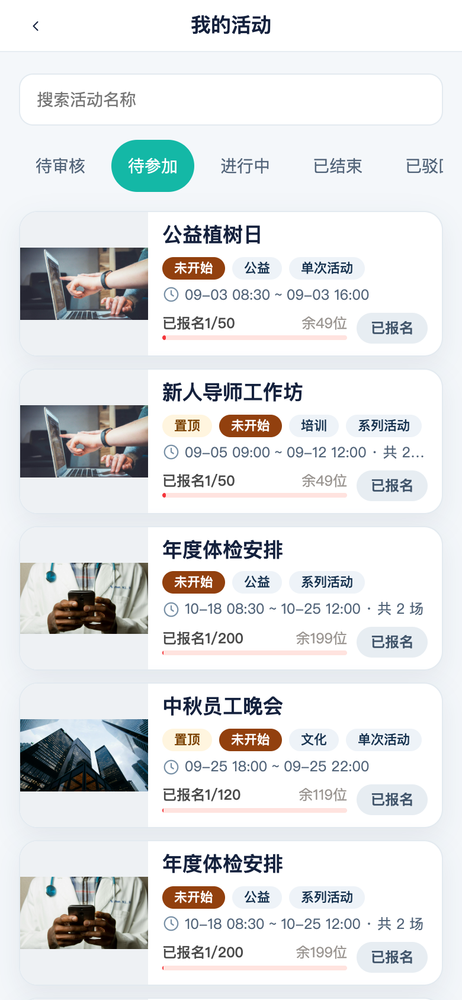
H5-我的报名-页面整体 ：左图右文卡片（H5_MY_SIGNUPS_LIST_STYLE=left-image）。Tab：待审核/待参加/进行中/已结束/已驳回。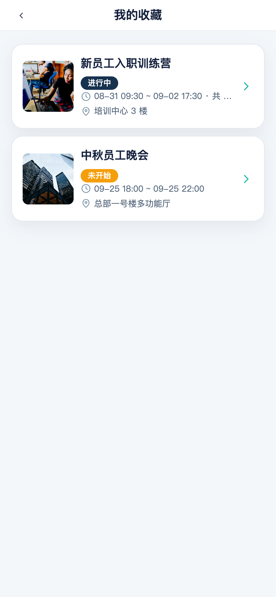
H5-我的收藏-页面整体 ：空「还没有收藏活动」+去看看活动。失效活动「活动已失效」。H5-往期瞬间-页面整体 ：读装修 moments.listStyle；首页 scroll 在本页变 two-col。空「暂无已结束活动」。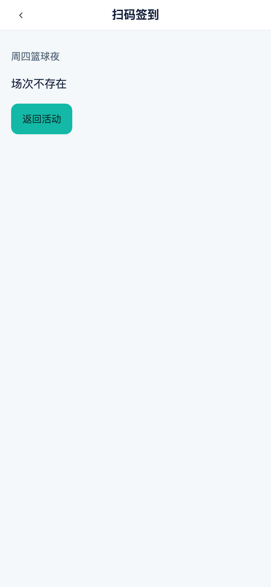
H5-签到页-场次不存在 ：无有效 s/t：活动名下展示「场次不存在」，按钮返回活动。签到失败文案（代码） 该活动未开启扫码签到；场次不存在；二维码无效或已刷新；还未到签到时间；签到已截止；请先报名该活动；报名通过后才能签到；未报名该场次。成功：签到成功；已签：你已签到过这场。
9. PC 页面需求
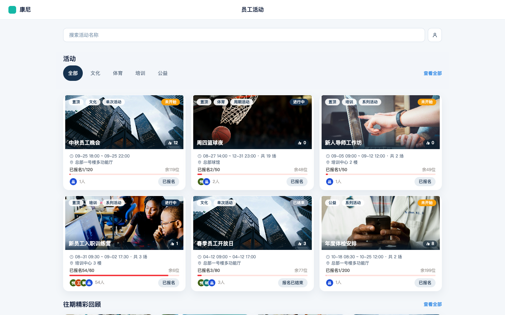
PC-首页-页面整体 ：装修：轮播 + HomeSearchRow + 活动网格（latestCount 默认 6，PC 列数 columnCount）+ 往期。卡片样式同 H5 五套 listStyle。顶栏无我的入口。PC-首页-搜索行 ：与 H5 同结构 HomeSearchRow；搜索不再塞进活动区块标题栏。PC-首页-我的活动 ：c-home-mine-btn → goPcMySignups。搜索页/全部活动无此按钮。PC-首页-轮播图 ：PC 轮播按 375:bannerHeight 比例；无图不渲染。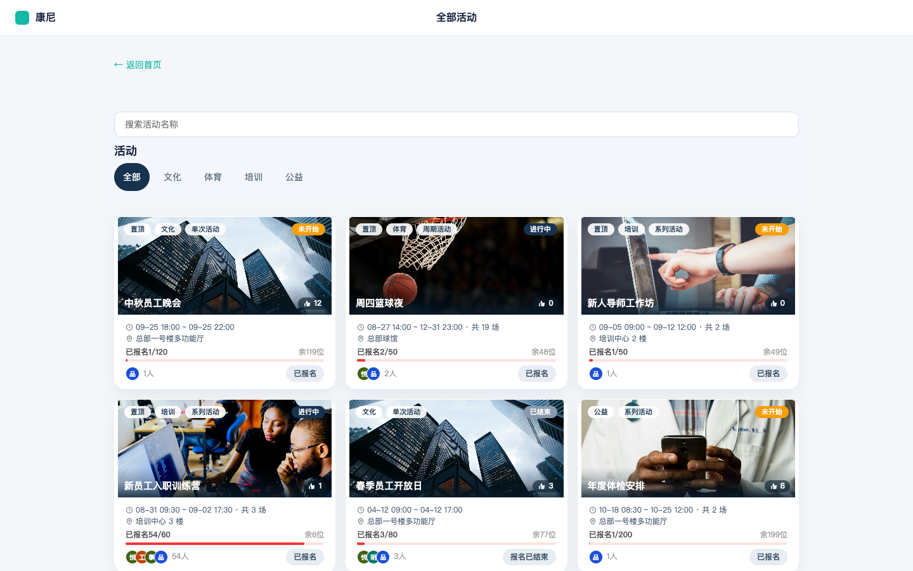
PC-全部活动-页面整体 ：与 H5 同一套过滤与 CTA 文案，布局为网格。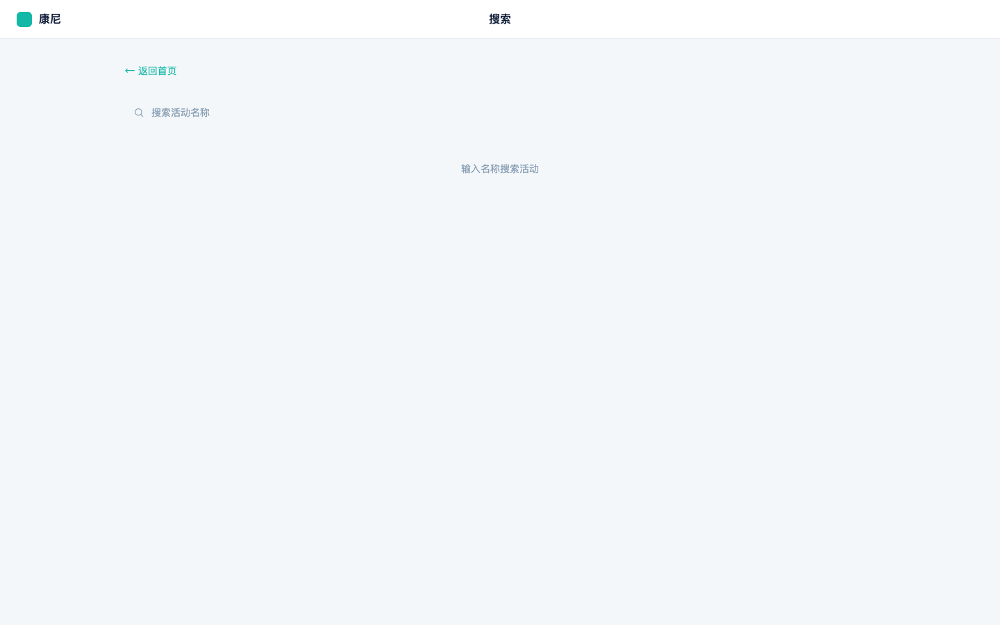
PC-搜索-页面整体 ：搜索变体，逻辑同 H5。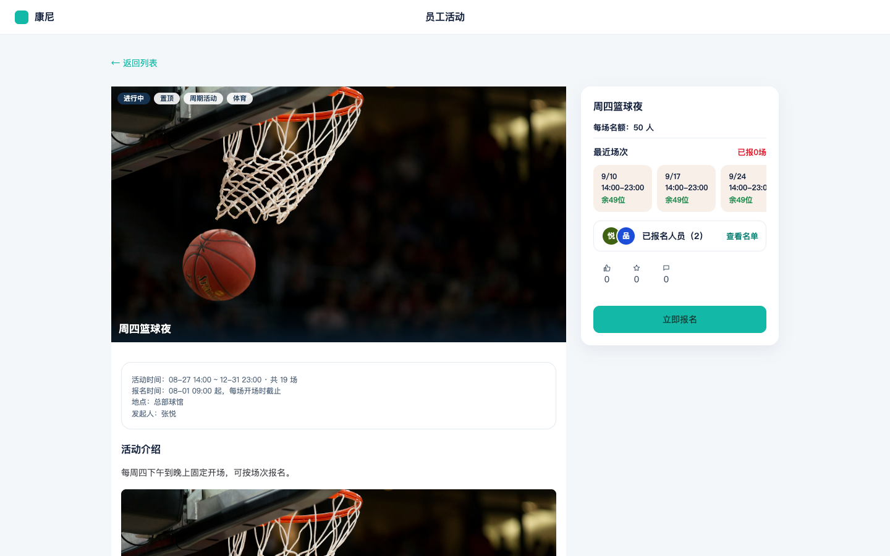
PC-活动详情-页面整体 ：左介绍右 aside：名额、签到码（发起人）、场次、名单、engage、CTA。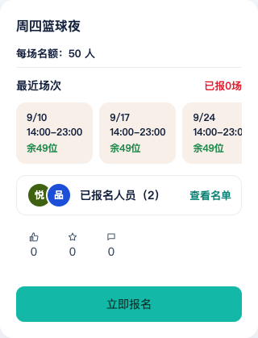
PC-活动详情-右侧栏 ：名额与 CTA 固定在右侧。已报名人员同 H5 组件，弹层为 Modal。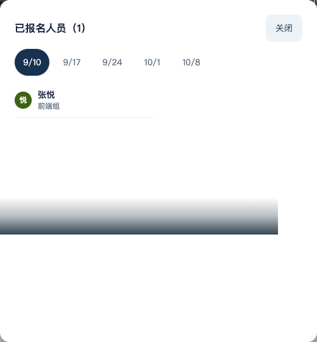
PC-活动详情-已报名人员 ：Modal 两列名单；场次日期 Tab 与搜索规则同 H5。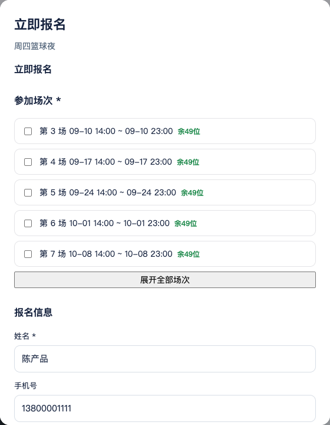
PC-活动详情-报名弹窗 ：hash /signup 或点立即报名打开 PcSignupModal，表单与 H5 SignupForm 同一套。PC-已结束活动-详情 ：评分与瞬间规则同 H5。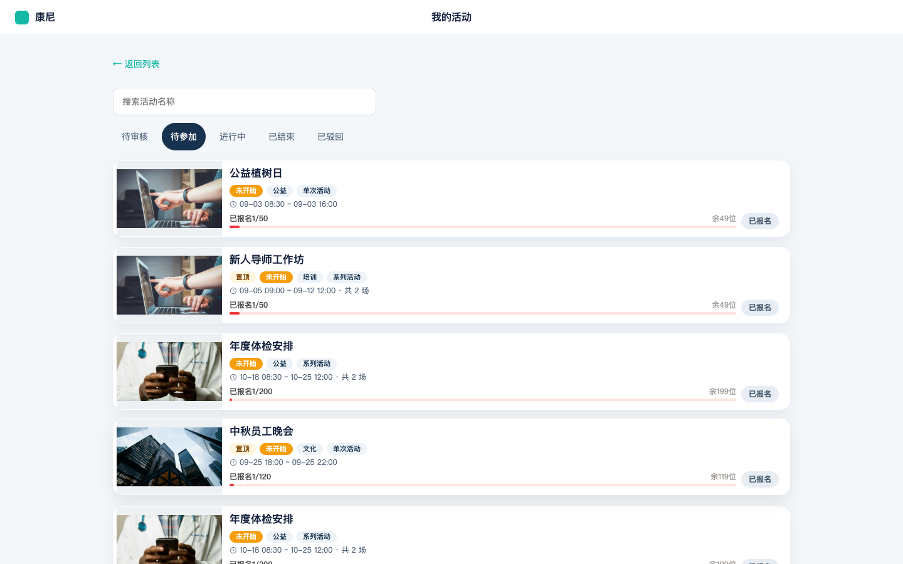
PC-我的报名-页面整体 ：PC_MY_SIGNUPS_LIST_STYLE=left-image，不跟首页装修 listStyle。五 Tab 同 H5。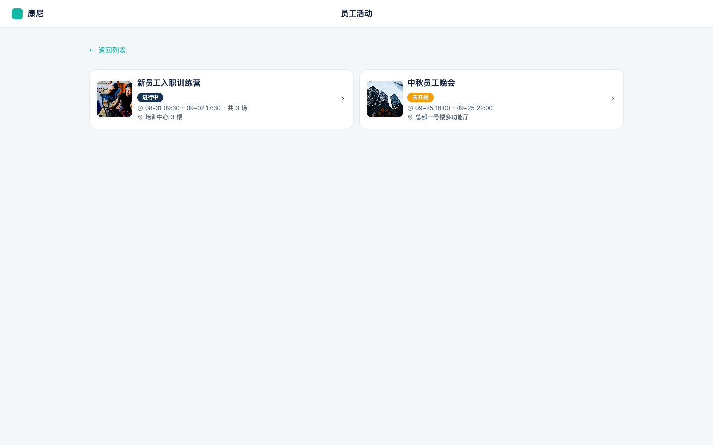
PC-我的收藏-页面整体 ：空态同 H5。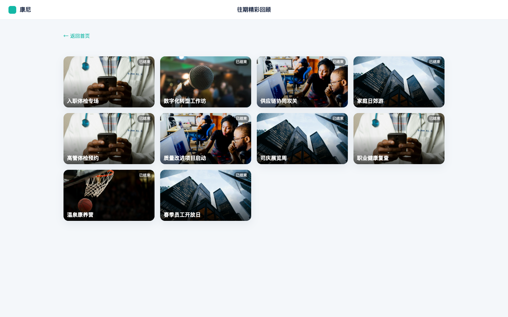
PC-往期瞬间-页面整体 ：返回 ← 返回首页。PC 无独立 checkin 路由。员工扫码必须用 H5 URL。发现/搜索/详情过滤同 5.1。发起人若在 PC 详情满足姓名全等，可在 aside 看 OrganizerCheckInQr。